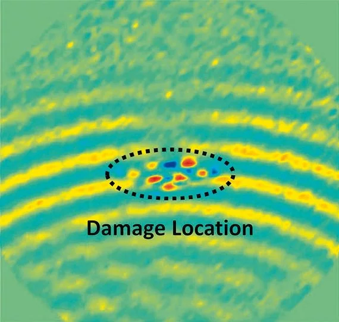

Non-destructive testing using lamb waves with high spatial resolution
Lamb wave tests are an adequate method for analyzing light-weight structures like carbon fiber-reinforced plastic (CFRP) used for the aviation industry. When it comes to fiber-reinforced composites, it is extremely important that damage such as delamination or cracks are detected and localized in good time – both in production and during operation. “Lamb waves” – surface waves that propagate on thin plate structures – play a major role in non-destructive materials testing, since they interact with different types of material faults, which makes damages visible.
PSV Polytec Scanning Vibrometers are ideal for designing component-integrated sensor networks, which are increasingly being used in critical structural elements, including aircraft, so as to continually monitor them during operation (structural health monitoring). These full-field scanning vibration sensors have become the number one development tools for adapted materials testing methods. The non-contact systems visualize the temporal propagation of Lamb waves with a high spatial resolution. The entire 3D vibration vector is recorded for each scan point, so that the typical S and A waves are broken up during the analysis. Laser vibrometers are thus indispensable for you as tools for researching Lamb waves and developing methods that are suitable for industrial purposes.
Lamb waves for precise defect localization
Integrated sensor networks should simplify structural health monitoring of modern aircraft structures and actively indicate incipient damage. The quantitative and temporal propagation of test signals in the component can easily be checked and visualized with laser Doppler scanning vibrometers, allowing for reliable calibration of experimental sensor networks and proving dependability.

Lambwave testing for damage detection in material research
Related Products

PSV-500 Scanning Vibrometer
The PSV-500 Scanning Vibrometer measures vibrations on an entire surface in a non-contact and laser precise way. Its visible HeNe laser provides outstanding SNR on well-reflecting sample surfaces and is ideal for small samples and under water. This flexible measurement platform allows researchers and developers to master the most challenging vibration measurement tasks with ease. Detect and visualize operational deflection shapes and Eigenmodes with this cutting-edge laser Doppler vibrometer. Upgrade or expand it to a full 3D system, once your application-specific demands grow.
Read more
PSV-500-3D Scanning Vibrometer
PSV-3D Scanning Vibrometers measure 3D dynamics in research and product development in a reliable and precise way. The visible HeNe laser provides outstanding SNR on well-reflecting sample surfaces. The deflection shapes and Eigenmodes detected help you with everything from NVH, acoustic and structurally dynamic issues to ultrasonic analyses, FEM validation and non-destructive testing.
Read more